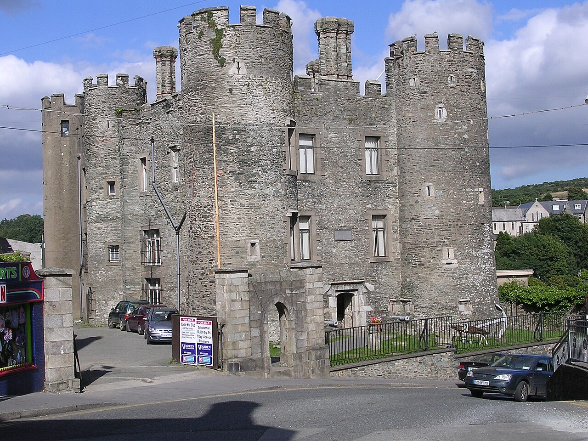

1
Town Centre Landmark
Enniscorthy Castle
Dominating the town skyline above the River Slaney, this Norman castle has witnessed over 800 years of turbulent Irish history. Visitors can climb to the battlements for panoramic 360-degree views across Enniscorthy's rooftops, Vinegar Hill, and the winding river below.
Family & Visitor Tip
Excellent indoor exhibition exploring local Wexford crafts, the Norman invasion, and famous Enniscorthy designer Eileen Gray. Ideal on a rainy morning, with safe stairs for children and welcoming staff.